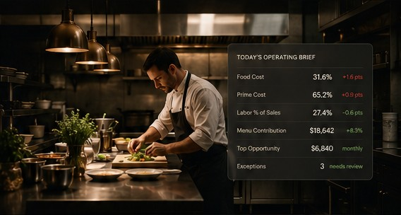
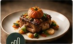
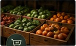
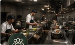
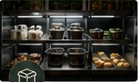
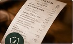
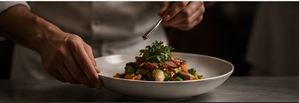

Food Cost
Know what each recipe and plate costs today—not six months ago.
Intelligence. Clarity. Control.
Project MISE turns invoices, recipes, menus, purchasing, labor, sales, and operating data into clear decisions that protect your margins.
Food Cost•Menu Margin•Purchasing•Labor•Waste•ControlsEverything in its proper place.

Illustrative sample · Actual results varyThe Reality
Corporate groups employ controllers, procurement analysts, financial teams, menu strategists, and loss-prevention staff. Independent operators often make the same decisions alone, between service, payroll, vendor calls, and the next emergency.
Complete Operating Visibility
Know what each recipe and plate costs today—not six months ago.

See which items drive contribution and which add complexity without enough return.

Track price movement, vendor exposure, credits, substitutions, and purchasing patterns.

Connect staffing, prep, dayparts, sales, and productivity.

Understand theoretical usage, actual movement, stockouts, spoilage, and overproduction.

Surface unusual refunds, voids, discounts, invoices, cash movement, and operational exceptions.
How It Works
Invoices, menus, recipes, POS, payroll, inventory—we accept it all.
We organize, clean, and connect your data.
We identify changes, trends, and what deserves attention.
You get clarity, context, and recommendations.
Approve, adjust, act. We track the results.
Sample Daily Operating Brief
Good morning. Here is what needs attention.
Our Mission
Restaurant owners should not have to choose between operating on instinct and hiring an executive team they cannot afford.
Project MISE exists to make restaurant financial and operating intelligence accessible to owners, chefs, managers, and families carrying the weight of the business every day.
We are not building technology for technology’s sake.
We are building a practical system that helps restaurant owners protect what they built, keep more of what they earn, and make decisions with greater confidence.
Our Story
Two decades ago, we built MisEnSoft, an early food-cost platform inspired by the discipline of mise en place. It connected recipe costing with supplier data before the technology was ready to make the process simple.
Today, modern data systems and intelligent automation make the original vision possible at a much larger scale.
Project MISE is not the revival of an old software product.
It is the completion of an unfinished mission.

Help shape the future of restaurant operating intelligence and receive exclusive founding benefits.